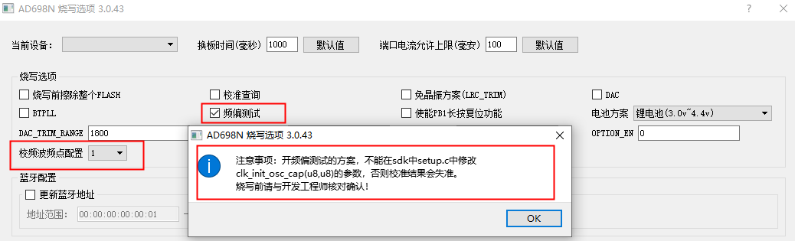
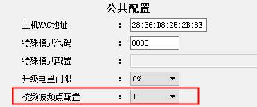
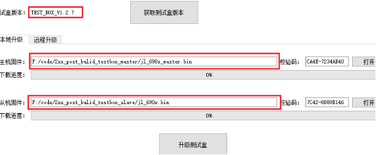

2.15. 频偏校准功能
2.15.1. 应用场景
正常生产过程，样机频偏校准是通过测试盒对样机逐个进行校准。为了省去样机单独进行频偏校准的步骤，在一拖八烧录器量产烧录芯片程序过程中，间接通过测试盒对样机进行频偏校准，提高生产效率。
2.15.2. 校准说明
原理说明
测试盒工作在校频波发射模式，持续发射基准信号做基准源，一拖八烧录器烧录器对样机芯片烧录完代码后使样机进入频偏校准模式，
样机芯片持续接收测试盒发过来的基准信号做参考源来校准自身频偏。
样机频偏校准校准的是基准频率，频偏校准完后烧录器烧录校准参数到芯片指定存储区域，SDK直接读取进行频率补偿，客户无需关心具体实现过程。
支持频偏校准需要用到的工具版本
工具
固件版本（以上）
硬件版本（以上）
支持芯片型号
测试盒
V1.2.5.a
1T2_Test_BOX_V2.3
蓝牙系列芯片
一拖八烧录器
V3.1.13
不限
AC695X、AD697N、AC897N、AD698N、AC700N、
JL700N、AC701N、JL701N、AC706N、AC707N、
JL708N、JL709N、JL710N、AC710N、AW30N
2.15.3. 校准操作流程
升级工具固件
通过一拖八烧录器进行频偏校准，需要把一拖八烧录器，以及测试盒升级到支持频偏校准版本的固件。
烧录器勾选“频偏测试”选项并配置“校频波频点配置”的参数，如图烧录器校频配置所示：

烧录器校频配置
烧录器默认不对频偏进行测试，如有频偏测试需求，请在更新目标芯片程序fw文件时在PC工具界面的烧录选项中勾选“频偏测试”选项。 务必按注意事项进行操作： 开频偏测试的方案， 不能 在sdk中
setup.c中修改clk_init_osc_cap(u8,u8)的参数，否则校准结果会失准。烧录前请与开发工程师进行核对确认！勾选“频偏测试”后，配置“校频波频点配置”参数
Note
“校频波频点配置”参数对于同一套烧录器和测试盒参数必须配置一致；默认参数是1（屏蔽环境或烧录器与测试盒距离很近可使用默认参数，可用一套即一个测试盒子对应多个烧录器校频），0~4是带内，5~9是带外的参数，如果是2.4G干扰严重的环境，建议用带外的频点；
多套测试盒和烧录器在非屏蔽环境使用时，每一套要分别设置不同的频点，避免干扰；
在测试盒PC端功能设置界面，“校频波频点配置”与烧录器参数配置成一致，如图测试盒校频配置所示：

测试盒校频配置
频偏校准过程
【1】测试盒上电开机，长按按键进入“校频波发射模式”
【2】烧录器上电开机，并搭建好烧录环境（注意测试盒尽量靠近样机）
【3】对样机执行程序烧录或校验，在程序烧录或校验后进行频偏校准(正式版固件只支持烧录、校验模式进行频偏校准)
【4】 校准结果判断：1、校准成功：进度条显示绿色；2、校准失败：进度条显示红色（有如频偏校准失败等报错信息）；
如图频偏校准过程所示：

频偏校准过程
AW30N频偏校准使用说明
AW30N 频偏校准与其它型号不同，该型号所用测试盒“校频波频点配置”暂时仅支持一个频点，需要升级特殊版本测试盒，测试盒程序中已经固定频点，烧写器程序部署界面暂时也不能配置频点，进入模式方式与第4点一致。用于校准AW30N频偏发射校频波的测试盒特殊版本固件：点击此处下载测试盒特殊版本
测试盒升级方法如图使用附件特殊版本升级测试盒主从机示例。所示：
使用附件特殊版本升级测试盒主从机示例。
2.15.4. 注意事项
建议使用有源晶振测试盒（测试盒硬件版本1T2_Test_BOX_V2.3以上），确认测试盒发出基准是准确的。
此项测试中样机与测试盒都需要尽量处于屏蔽箱内，避免外界环境影响到校准精度。
开频偏测试的方案， 不能 在sdk中
setup.c中修改clk_init_osc_cap(u8,u8)的参数，否则校准结果会失准。烧录前请与开发工程师进行核对确认！开启频偏测试，务必打开测试盒进入“校频波发射模式”，并同一套测试盒与烧录器，“校频波频点配置” 必须配置一致 ，否则一拖八烧录器烧录报频偏校准超时。